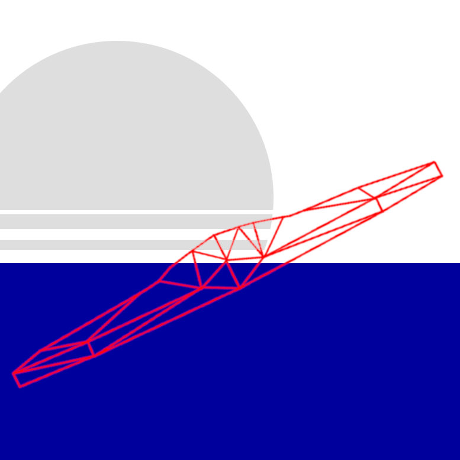

The first time I remember reading a Chinese novel is this year: Three Body Problem from Cixin Liu. It made me think; there are many translated works from Western authors, but I don't get to read a lot of Eastern works. This is, of course, not to say that
there is some Western bias in the world of authors - I think there is simply not enough people who know Eastern languages well enough to be translators. This is not to say there aren't enough Chinese-English translators in the world, but translating artwork
such as a novel is not the same thing with translating anything else. Simply knowing the language well is not enough for such a task. First of all, you have to be some sort of an artist yourself, so you can catch on the artistic tricks that were made by the
original author him/herself. This may also require that you be familiar with the art of the original author's country (or at least be willing to do some research in depth) - they may be referencing to a popular local event or pervious artwork and the
translator may have no clue otherwise, losing precious artistic expression the original author intended. In addition, not all artistic expressions work the same way in different languages, so at certain points, the translator will have to be a good enough
artist to come up with something nearly equivalent.
That is a lot to ask from a "mere" translator, is it not? Well, funny thing, that Chinese novel Three Body Problem has been translated by a Chinese person who knows English rather than an overseas person who had learned Chinese. After all, it is a lot easier
this way. Chinese is not the easiest language to learn to start with, and on top of that, one would have to know some Chinese culture! And on top of that, they would have to have comparable artistic talent (at least with the use of words if not with worldbuilding
or character design) to the original author!
The other problem begins with translating stuff involving lesser known languages. Because then, one could translate the book from a - you guessed it - another translation! For example, translating Three Body Problem into Italian from its English version could lose
perhaps four times the art that the English translation lost from the original Chinese version!

Anyway, enough about Three Body Problem. I ran into this artwork translation problem while programming a video game: Crystal Return. In this game, some poems appear on the screen as you are
dodging some crystals by maneuvering your abstract OpenGL polygon plane. Since the game is in English, I figured that I'd put the poems in English too. However, a lot of the poems I wanted to put in the game were Turkish! I was not going to search for their
English translations if they even existed, so I sat down and thought how I could translate them AND also fit in with the rest of the game. (Video games are art too, you know. Well... at least a lot of them are.)
The first one is some excerpts from Mehmet Akif Ersoy's Safahat. The original goes:
Sormayin derdimi, bitmez mi o taslar, giderek,
Düstü artik bize göllerde pekâlâ yüzmek!
Yakamozlar saçarak her tarafindan fenerim,
Çifte sandal, yüzüyorduk, o yüzer, ben yüzerim!
...
Çok mu yüzdük bilemem, topragi bulduk neyse;
Fenerim basladi etrâfini tektük hisse.
Vâkiâ ben de yoruldum, o fakat pek yorgun...
Bakiyordum daha mahmurlugu üstünde onun:
...
Ya o bîçâre de râhmet suyu nûs eyliyerek,
Hatm-i enfâs edivermez mi hemen "ciz!" diyerek?
O zaman sâmi'anin, lâmisenin sevkiyle
Yürüyen körlere döndüm, o ne dehsetti hele!
....
Hele yâ Rabbi sükür, karsidan üç tâne fener
Geçiyor... Sapmiyarak dogru yürürlerse eger,
Giderim arkalarindan... Yolu buldum zâten.
Yolu buldum, diyorum, gelmis iken hâlâ ben!
Iste karsimda bizim yâr-i kadîmin yurdu.
Bakalim var mi isik? Yoksa muhakkak uyudu.
I really like this kind of poetry. I didn't follow the original story closely and used some "artistic freedom", but still wanted to achieve a similar feel, and there was no way I could
translate all the word-art (not the Microsoft one) within anyway. My version became the following:
THE LANTERN, MY COMPANY, SUDDENLY MET ITS DOOM
IN AN INSTANT I AM LEFT IN A QUITE COLD GLOOM
RAIN POURING DOWN DEEP INTO THE LATE NIGHT
PASSING RIGHT AHEAD IS A SINGLE FAINT LIGHT >> Translator's note: Here I turned the three lights in the original to one
IF, WANDER AWAY NOW, IT IS GOING TO NOT
FOLLOW CLOSELY I SHALL, STAYING A BIT BEHIND
BUT, ON THE PATHWAY, I SEEM TO BE ALREADY
AT MY DESTINATION, WHO KNOWS, I MIGHT VERY WELL BE
JUST ACROSS THE ROAD, HE WOULD OF COURSE KNOW ME >> Translator's note: In the original, this part is chronologically before the part I wrote above
HE WOULD APPRECIATE VERY MUCH THIS TIMELY VISIT TO THEE
LETS SEE WHETHER THE ROOM IS LIT BRIGHT STILL
OR RESTING HE MAY BE, PERHAPS FALLEN ILL >> Translator's note: I turned "sleeping" into "fallen ill", because, again, we don't have the whole background in the translated excerpt
Another work that I wanted to translate was the infamous Turkish poem "Silent Ship". The original is:
Artik demir almak günü gelmisse zamandan
Meçhule giden bir gemi kalkar bu limandan.
Hiç yolcusu yokmus gibi sessizce alir yol;
Sallanmaz o kalkista ne mendil, ne de bir kol.
Rihtimda kalanlar bu seyahatten elemli,
Günlerce siyah ufka bakar gözleri nemli,
Biçare gönüller! Ne giden son gemidir bu!
Hicranli hayatin ne de son matemidir bu.
Dünyada sevilmis ve seven nafile bekler;
Bilmez ki giden sevgililer dönmeyecekler.
Bir çok gidenin her biri memnun ki yerinden,
Bir çok seneler geçti; dönen yok seferinden.
I followed the original much more closely on this one, perhaps because I translated the whole thing rather than an exceprt. My translated version is:
WHEN IT IS TIME TO WEIGH THE ANCHORS
A SHIP DEPARTS FROM HERE TO THE UNKNOWNS
IT SAILS AS IF THERE IS NO ONE ABOARD
NONE WAVES A HAND, IT MOVES ONWARD
THOSE LEFT ON THE SHORE ARE DEEPLY IN SORROW
STARING AT THE HORIZON WITH A SILENT DARK GLOW
POOR SOULS, FOR THIS IS NOT THE LAST SHIP
THERE WILL SOON BE MORE SAILING TOWARDS THE DEEP >> Translator's note: This is different from the original
LOVERS AWAIT THEIR BELOVED, LOOKING AT ITS STERN >> Translator's note: And this is also a bit different
FUTILE, FOR THOSE WHO LEFT ARE NEVER GOING TO RETURN
TRAVELLERS SEEM PLEASED WITH THEIR DESTINATION
MANY YEARS HAVE PASSED, RETURNS ARE ON STAGNATION
I have also translated some Turkish songs for the game, but they unfortunately do not have the same lyrical elegance as the poems.
arda-guler, 2021 - 2023. All Rights Reserved.